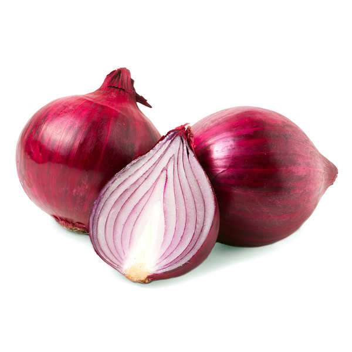

"ONION"
OnionsAn onion is a vegetable, specifically a bulb, with a pungent flavor and strong smell.
It's widely used in cooking, and belongs to the genus Allium, related to garlic, shallots, and leeks.
Onions are a good source of nutrients and offer several potential health benefits.

Key Characteristics:
- Pungency:Onions have a sharp, strong taste and smell caused by volatile sulfur compounds.
- Flavor:The flavor can range from mild and sweet (in warmer climates) to pungent.
- Odor:The release of volatile sulfur compounds during chopping or peeling can cause eye irritation.
- Appearance:Onions come in various colors (white, yellow, red, etc.) and shapes (round, flattened, etc.).